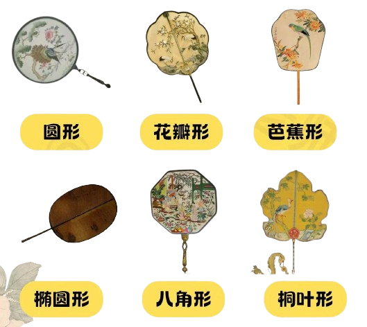
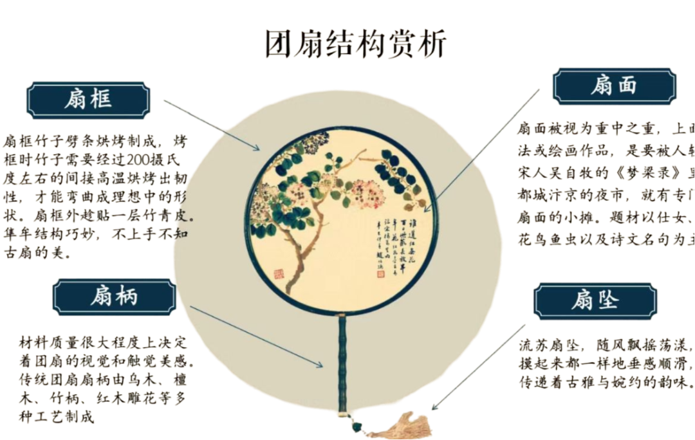

团扇 ou tuán shàn
Conhecido como leque redondo chinês, é um objeto tradicional da cultura chinesa com uma longa história, remontando à dinastia Han (202 a.C. – 220 d.C.). Este leque é caracterizado por sua forma circular ou oval, geralmente com uma moldura de bambu ou madeira e uma tela feita de seda, papel ou outros materiais finos. Ele se destaca por ser mais ornamental do que funcional para ventilar, tendo sido usado tanto como acessório de moda quanto como objeto de arte.
História
Cultura
O 团扇 tem uma longa história na cultura chinesa, sendo utilizado desde a dinastia Han (206 a.C. – 220 d.C.). Ele era popular entre a nobreza e era frequentemente usado tanto para se refrescar quanto como um acessório de moda e símbolo de status.
Forma e Design
Diferente dos leques ocidentais que costumam ter uma forma mais alongada, o 团扇 é circular, o que lhe dá uma aparência distinta. O design do leque pode incluir uma variedade de padrões e pinturas, muitas vezes com temas como flores, paisagens e cenas da vida cotidiana.
Artesanato
A confecção do 团扇 envolve habilidades artesanais específicas. O corpo do leque é feito com bambu e, às vezes, madeira, enquanto a face do leque é coberta com seda ou outros tecidos decorativos. Muitos 团扇 são elaboradamente pintados ou bordados à mão, mostrando a habilidade e a criatividade dos artesãos..
Representação Cultural e Uso
O 团扇 muitas vezes aparece na arte e na literatura chinesas como um símbolo de elegância e refinamento. Além de sua função prática de fornecer alívio do calor, o 团扇 também tem um papel decorativo e simbólico em eventos e cerimônias culturais. É comum em danças e performances tradicionais, e também é usado em ocasiões especiais como festivais e casamentos.
Estrutura
扇框（Estrutura do Leque）
As varetas de bambu que compõem a estrutura do leque passam por um processo de cozimento. O bambu é submetido a uma alta temperatura indireta de aproximadamente 200 graus Celsius. Este tratamento confere a resistência necessária para que as varetas possam ser moldadas na forma ideal do leque.
扇面（Face do Leque）
A face é o elemento mais importante do leque. Nela, encontram-se trabalhos requintados de caligrafia e pintura. Os temas retratados são predominantemente flores, pássaros, insetos, peixes e poemas, refletindo a beleza da natureza e da literatura.
扇柄（Cabo do Leque）
O cabo tradicional do leque é confeccionado utilizando uma variedade de materiais nobres e técnicas artesanais. Entre eles, destacam-se o ébano, o sândalo, o bambu e o mogno esculpido, cada um conferindo características únicas e refinadas ao leque.
扇坠 (Pingente do Leque)
O pingente de franja do leque adiciona um toque final de elegância. Ao balançar suavemente com o movimento do ar, transmite uma sensação de suavidade e um charme gracioso e refinado, complementando a estética geral do leque.
Poeta da dinastia Song
Aspectos Históricos da China
O leque chinês é uma arte tradicional que reflete tanto a sabedoria quanto a estética dos artesãos da etnia Han, unindo funcionalidade e beleza. Antes da Dinastia Han, os leques eram utilizados principalmente para proteger nobres e imperadores do vento e da areia. Naquela época, para demonstrar seu status e prestígio, a classe dominante adotava leques com cabos largos e ornamentados, conhecidos como “Yi zhang fan” (leque de grande cabo). Este design não só evidenciava a importância social dos seus portadores, mas também se destacava pela sua elegância e sofisticação.
Leque de Casamento
O leque chinês de casamento é um elemento rico em simbolismo e tradição. Muitas vezes são decorados com pinturas ou bordados de símbolos auspiciosos, como flores e animais, que desejam boa sorte e prosperidade para o casal. Ele também adiciona um toque de beleza e significado à cerimônia, representando a união e a continuidade da vida conjugal.
Leque Artesanal
Com um formato circular, feita com uma estrutura de bambu ou madeira e coberta com tecidos como seda ou algodão, os leques artesanais são frequentemente decorados com pinturas ou bordados detalhados que podem representar uma variedade de temas, como flores, pássaros ou paisagens. Esses designs são feitos à mão, refletindo a habilidade e a criatividade dos artesãos.
Leque Tradicional
O uso de leques na China remonta a milhares de anos e é uma evolução do leque tradicional. Ele aparece frequentemente em representações artísticas antigas e na literatura, refletindo seu lugar importante na cultura chinesa. A superfície do leque pode ser adornada com várias formas de arte, incluindo pintura, caligrafia, bordado e padrões tradicionais. Essas decorações frequentemente têm significados simbólicos e podem incluir temas da natureza, figuras históricas ou mitológicas.